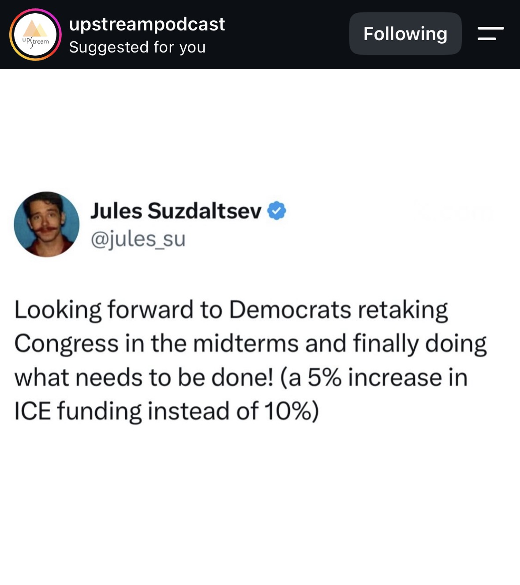

NEW EP: The Democratic Party w/ Cecilia Guerrero. In this episode Cecilia Guerrero joins us to pick apart the sordid origins and class orientation of the Democratic Party. Cecilia Guerrero is chair and founding member of A Luta Sigue, an organization based in Nashville, Tennessee which incubates and trains young people and workers within advanced sectors of the working class to build and lead their own class struggle organizations. The conversation opens with a history of the Democratic Party, which is also a history of the development of US capitalism. We then explore how the Communist Party of the USA (CPUSA), despite its successful origins, succumbed to opportunism and failed to be a vehicle for the working class in the United States. This resulted in the New Deal Democratic alliance being widely recognized as a working class party, despite, of course, being nothing of the sort. This shift paved the way for Franklin D. Roosevelt's program of throwing crumbs to the working class while working on behalf of the bourgeoisie to reform and stabilize capitalism. Cecilia goes on to describe how the Democratic Party has now fully embraced the role that it took on under FDR—promising watered down reforms to an increasingly exploited and immiserated proletariat as a release valve for their anger while never delivering meaningful change. She describes how the Democratic Party inserts itself into radical movements only to co-opt and neutralize them, providing examples from Ferguson to Nashville, where she herself organizes. We then discuss the Democrats role in upholding imperialism through their history of supporting imperial exploit, particularly their uncompromising reliance on sanctions, predatory development schemes, and other forms of economic warfare. Finally, we discuss what needs to happen in order for us to break out of this two-party duopoly of capitalism and build a party that truly represents the working class. Intermission music: @carsieblanton. July 2
Claims checked
Every Democratic senator voted to confirm Marco Rubio as Secretary of State (panel 2, @robpertray.bsky.social).
The Senate confirmed Rubio 99-0 on January 20, 2025, the first Trump second-term Cabinet confirmation. No senator voted against, so no Democrat opposed. The vote total was 99 rather than 100 because JD Vance's Ohio seat was vacant after he resigned to become Vice President; all 47 Democrats present voted yes. The tweet's factual core is accurate.
Cecilia Guerrero is chair and founding member of A Luta Sigue, a Nashville, Tennessee organization that trains young people and workers to build class-struggle organizations (episode caption, panel 7).
Guerrero is described across Upstream's own episode materials and independent podcast interviews as a Nashville-based organizer and founder/chair of A Luta Sigue. This is a self-descriptive biographical claim corroborated by secondary interview sources rather than an official registry, so it is confirmable but not primary-record grade.
Interpretation (ungraded)
- Panel 1 (@jules_su): a satirical tweet mocking Democrats by imagining them 'finally doing what needs to be done' via a 5% rather than 10% ICE funding increase — rhetoric/humor, not a factual claim.
- Panel 3 (@jasonhickel): opinion that Republicans and Democrats form a single 'rotten' ruling class and 'the whole edifice needs to be brought down' — political commentary, not gradeable fact.
- Panel 4 (@shaunvids.bsky.social): a satirical tweet telling Americans to 'just give the democrats $20' to fund ICE — humor/satire, not a factual assertion.
- Panel 5 (@alexbronzini): a fictional/satirical hypothetical about a Democratic senator tweeting 'well THAT just happened' after Trump 'proclaims the indefinite cancellation of the 2028 election' — an invented scenario, not a reported event.
- Panel 6 (@TheMcKenziest): opinion that Democrats 'aren't fighting back' because 'they all work for the same billionaires' — analysis/opinion, not a verifiable fact.
- The episode caption's characterization of the New Deal, FDR, and the CPUSA (e.g., FDR 'throwing crumbs to the working class,' the Democratic Party as a bourgeois release valve, the party co-opting radical movements) is an explicitly Marxist historical interpretation — argumentative rather than discrete checkable facts, and not graded.
What the sources establish
This is an Instagram carousel from @upstreampodcast promoting a new episode, "The Democratic Party w/ Cecilia Guerrero." Six of the seven panels are screenshotted social-media posts (from X/Twitter and Bluesky accounts) offering satire and left-wing critique of the Democratic Party, and the seventh is the episode caption. Most of the content is opinion, humor, or explicitly Marxist historical analysis rather than discrete factual assertions, so relatively little of it is independently checkable.
The clearest checkable claim appears on panel 2: that "every last democrat voted to confirm marco rubio as secretary of state." This is supported by the primary Senate roll call — Rubio was confirmed 99-0 on January 20, 2025, with no senator voting against and all Democrats present voting yes. The caption's biographical claim about episode guest Cecilia Guerrero (chair and founding member of the Nashville organization A Luta Sigue) is also supported by secondary interview sources.
The remaining panels — a joke about ICE funding percentages, an opinion that both parties serve a single ruling class, a satirical "give the democrats $20" post, an invented scenario about a cancelled 2028 election, and a claim that Democrats "all work for the same billionaires" — are commentary and satire, not reported events, and are recorded as interpretations rather than graded. The caption's framing of the New Deal, FDR, and the CPUSA is likewise an argumentative historical reading, not a set of falsifiable facts.
Sources
- Primary U.S. Senate Roll Call Vote 119th Congress, 1st Session, Vote 00008 (Rubio confirmation)
- Secondary Senate Votes 99-0 to Confirm Marco Rubio as Secretary of State — Democracy Now!
- Secondary Confirmation process for Marco Rubio for secretary of state — Ballotpedia
- Secondary The Quest for the Offline Left with Cecilia Guerrero: Organizing the South — Fucking Cancelled
Share this
An Instagram carousel from the leftist podcast @upstreampodcast promoting an episode critiquing the Democratic Party, built mostly from screenshotted satire and opinion posts. The one hard factual claim — that every Democratic senator voted to confirm Marco Rubio as Secretary of State — is accurate: the Senate confirmed him 99-0 on January 20, 2025, with no Democrat opposed. The rest is opinion, satire, and Marxist historical interpretation rather than gradeable fact.
Checked against primary sources
CALL AND RESPONSE
Checked against primary sources where available. Researched with AI, reviewed by a human editor.